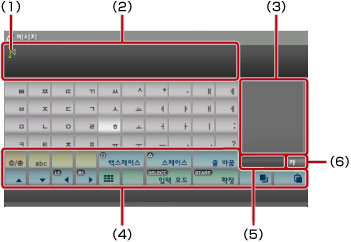
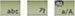
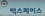
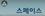
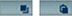
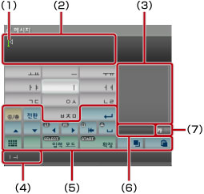
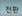
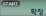

XMB™에 대하여 > 키보드 사용하기
키보드 사용하기
텍스트 입력이 필요할 때마다 키보드가 자동으로 표시됩니다. 여기에 제공된 설명에서는 한국어 키보드를 사용한다고 가정합니다. 다른 언어 키보드 사용에 대해서는 해당 언어의 사용자 가이드를 참조해 주십시오.

(1) |
커서 |
|---|---|
(2) |
입력창 |
(3) |
자동 완성 후보 표시 |
(4) |
기능 키 |
(5) |
자동 완성 기능이 켜져 있을 때 표시 |
(6) |
입력 모드 표시 |
조작 항목 목록
입력 상황에 따라 표시되는 키가 다릅니다.
 |
기호 또는 이모티콘을 입력합니다. |
|---|---|
 |
입력할 문자 종류를 전환합니다. |
| 커서를 이동합니다. | |
 |
커서 왼쪽의 문자를 지웁니다. |
 |
문자 사이에 띄어쓰기를 합니다. |
| 줄 바꿈을 할 때 사용됩니다. | |
 |
텍스트를 복사/붙여넣기 합니다. |
 |
미니 사이즈 키보드로 전환합니다. |
| 입력 모드를 전환합니다. | |
 |
입력되었지만 확정되지 않은 문자를 확정하거나 입력 내용을 확정하고 키보드를 닫습니다. |
문자 입력하기
방향키로 문자를 선택한 후  버튼을 눌러 입력합니다. 입력을 마치면 “확정” 키를 눌러 키보드를 종료합니다.
버튼을 눌러 입력합니다. 입력을 마치면 “확정” 키를 눌러 키보드를 종료합니다.
알아두기
- 자판에 없는 모음(ㅢ, ㅚ, ㅟ, ㅘ, ㅙ, ㅝ, ㅞ)은 모음 간의 조합을 통해 입력할 수 있습니다.
- 일부 입력 모드에서는 이모티콘을 사용할 수 없습니다.
- 입력 가능한 언어는 본 제품의 시스템 언어에 대응합니다. 예를 들어 시스템 언어가 프랑스어로 설정된 경우 프랑스어로 텍스트를 입력할 수 있습니다. 시스템 언어는
 (설정) >
(설정) >  (시스템 설정) > [시스템 언어]에서 설정할 수 있습니다.
(시스템 설정) > [시스템 언어]에서 설정할 수 있습니다.  버튼 + L1 버튼을 누르면 입력 필드에 있는 문자를 모두 삭제할 수 있습니다.
버튼 + L1 버튼을 누르면 입력 필드에 있는 문자를 모두 삭제할 수 있습니다.
외부 키보드 사용하기
별매의 USB 키보드나 Bluetooth® 대응 키보드를 연결하여 문자를 입력할 수 있습니다. 문자 입력 화면이 표시된 상태에서 연결된 키보드의 키를 누르면 입력 화면이 전환됩니다.
알아두기
- Bluetooth® 키보드의 연결 방법에 대한 상세한 내용은 (설정) >
 (주변기기 설정) > [Bluetooth® 기기 관리]를 참조해 주십시오.
(주변기기 설정) > [Bluetooth® 기기 관리]를 참조해 주십시오. - 연결된 키보드를 사용할 때는 자동 완성 기능을 사용할 수 없습니다.
- Alt 키 + Enter 키를 누르면 입력 필드 내에서 줄 바꿈할 수 있습니다.
 (친구)에서 메시지를 작성하는 경우 등 줄 바꿈을 할 수 있는 경우에만 활성화됩니다.
(친구)에서 메시지를 작성하는 경우 등 줄 바꿈을 할 수 있는 경우에만 활성화됩니다. - Shift 키 +Backspace 키를 누르면 입력 필드에 있는 문자를 모두 삭제할 수 있습니다.
- Ctrl 키 + V 키를 누르면 복사한 텍스트를 붙여넣을 수 있습니다. 마지막에 복사한 텍스트가 입력됩니다.
미니 키보드 사용하기
풀 사이즈 키보드에서 를 선택하면 미니 키보드로 바뀝니다. 미니 키보드에서는 하나의 키에 여러 문자가 할당되어 있습니다.

(1) |
커서 |
|---|---|
(2) |
입력창 |
(3) |
자동 완성 후보 표시 |
(4) |
선택한 키로 입력할 수 있는 문자 표시. |
(5) |
기능 키 |
(6) |
자동 완성 기능이 켜져 있을 때 표시 |
(7) |
입력 모드 표시 |
조작 항목 목록
입력 상황에 따라 표시되는 키가 다릅니다.
 |
기호를 입력합니다. |
|---|---|
 / /  |
대문자와 소문자를 전환합니다. / 입력할 문자 종류를 전환합니다. |
 |
줄 바꿈을 할 때 사용됩니다. |
| 커서를 이동합니다. | |
 |
커서 왼쪽의 문자를 지웁니다. |
 |
문자 사이에 띄어쓰기를 합니다. |
| 텍스트를 복사/붙여넣기 합니다. | |
 |
풀 사이즈 키보드로 전환합니다. |
| 입력 모드를 전환합니다. | |
 |
입력되었지만 확정되지 않은 문자를 확정하거나 입력 내용을 확정하고 키보드를 닫습니다. |